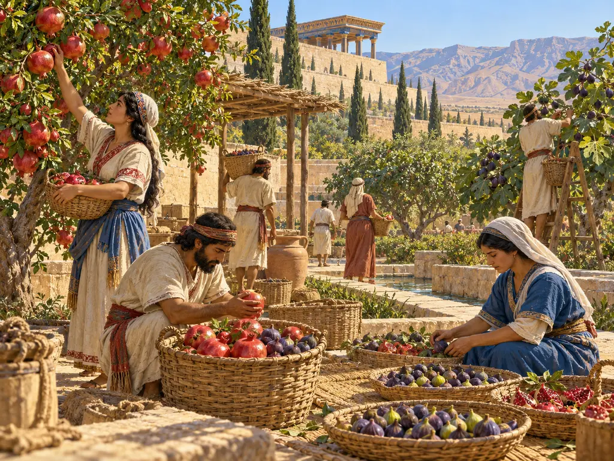
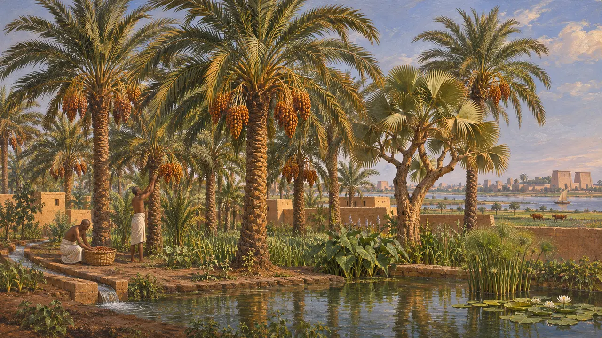
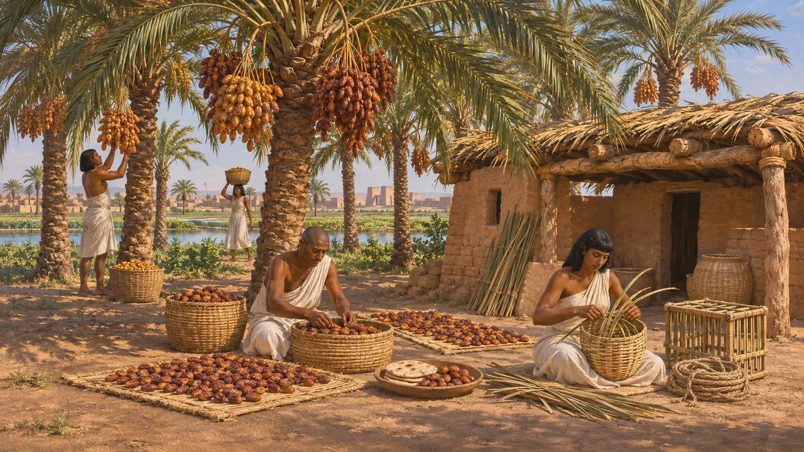
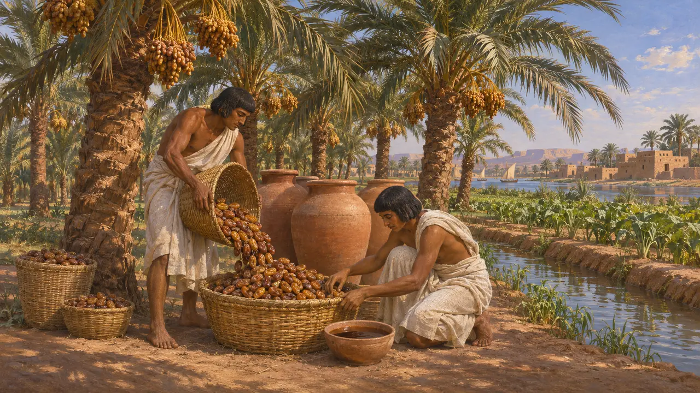
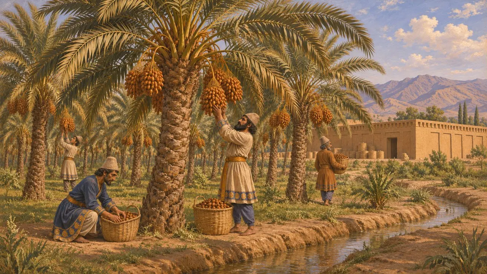
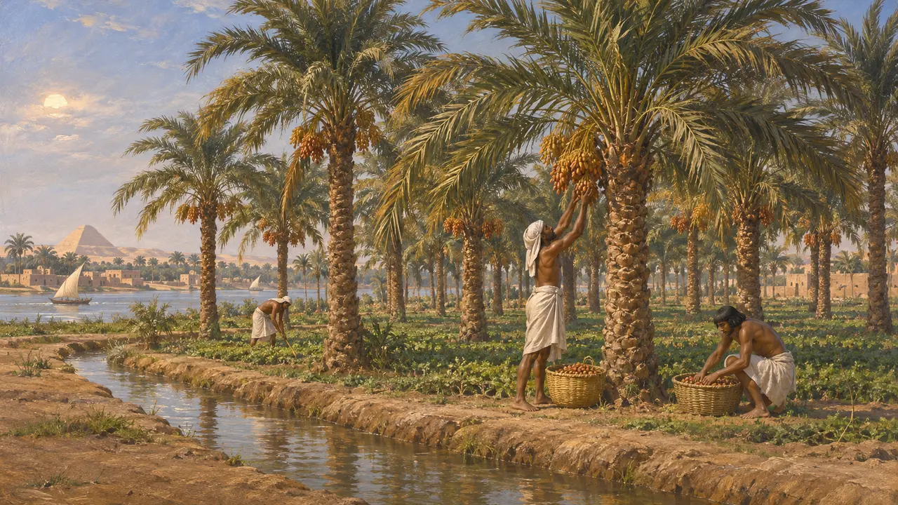

椰枣树在埃及已生长了许多世纪，是当地最有用的树木之一。其果实可鲜食或晒干，也用作甜味料；树干和叶片则用作木料、屋顶、席垫和绳索。公元前525年冈比西斯征服埃及时，孟斐斯周围的田野和村落间遍布椰枣林，早在波斯统治之前便已如此。
游戏中： 在孟斐斯关卡中，果园化身为黑土地上的椰枣林，长老宅需要椰枣。“黑土地”译自埃及人对自己国家的称呼 kemet，得名于尼罗河畔深色的土壤。

黑土之地的棕榈
见于史载在埃及的墓葬和聚落中曾发现枣核和干椰枣，墓中的食物供品里也摆有椰枣。自公元前第二千纪起，随着栽培椰枣树广泛传播，这类发现变得常见得多。新王国时期的墓室壁画描绘了园中和池畔的椰枣树与分枝的埃及姜果棕。孟斐斯的遗址位于今米特拉希纳，至今仍掩映在棕榈林中。
W. Darby, P. Ghalioungui and L. Grivetti, Food: The Gift of Osiris, 1977; D. Zohary, M. Hopf and E. Weiss, Domestication of Plants in the Old World, 2012

食物、甜料与建材
见于史载文献和遗存显示，椰枣可以整颗食用，也可晒干储存，还可用来给面包增甜，因为蜂蜜价格昂贵。早期研究认为椰枣也用于给啤酒调味，但残留物分析尚未证实这一点。棕榈树干可作梁木和屋顶，棕榈叶的叶轴可编篮筐和箱笼，纤维可搓绳。一片椰枣林能从同一批树上为一户人家提供食物和材料。
W. Darby, P. Ghalioungui and L. Grivetti, Food: The Gift of Osiris, 1977

希罗多德论棕榈酒与棕榈林
古代记述希罗多德记载，埃及的防腐师先用棕榈酒冲洗尸体腹腔，再用研碎的香料清洗，然后才填塞。写到巴比伦尼亚时，他描述了一片遍布棕榈的平原，出产粮食、酒和一种蜜。他把棕榈的授粉与无花果的处理方式相比，可见他并不明白棕榈如何授粉。
Herodotus 2.86; Herodotus 1.193

波斯腹地的椰枣
见于史载椰枣树生长在埃兰与波西斯南部温暖的低地。波斯波利斯城防档案中的埃兰语泥板写于大流士在位期间，记录了从王室仓储中发放的物资，其中除谷物、葡萄酒和啤酒外，还有椰枣。因此，来到埃及的波斯人早已熟悉这种树及其果实。
R. Hallock, Persepolis Fortification Tablets, 1969

波斯统治带来的改变
争夺中希罗多德列出了埃及的贡赋：白银、渔业收入，以及供给孟斐斯波斯驻军的谷物，却只字未提椰枣。冈比西斯和大流士治下椰枣林如何征税，详情不得而知。历史学家们争论波斯统治在多大程度上改变了埃及的土地占有制度，许多人（布里昂即是其一）强调其延续性。奥古斯都时代的斯特拉波认为，下埃及的椰枣品质不及南方。
Herodotus 3.91; Strabo, Geography book 17; P. Briant, From Cyrus to Alexander, 2002
来源
- W. Darby, P. Ghalioungui and L. Grivetti, Food: The Gift of Osiris, 1977
- D. Zohary, M. Hopf and E. Weiss, Domestication of Plants in the Old World, 2012
- Herodotus 2.86; 1.193; 3.91
- R. Hallock, Persepolis Fortification Tablets, 1969
- P. Briant, From Cyrus to Alexander, 2002
- Strabo, Geography book 17